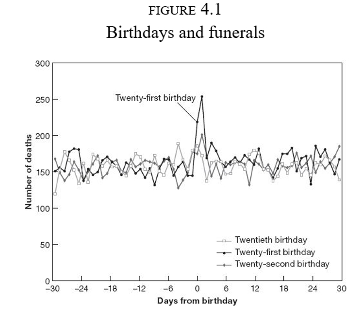
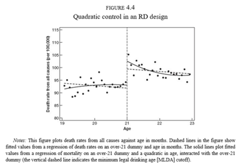
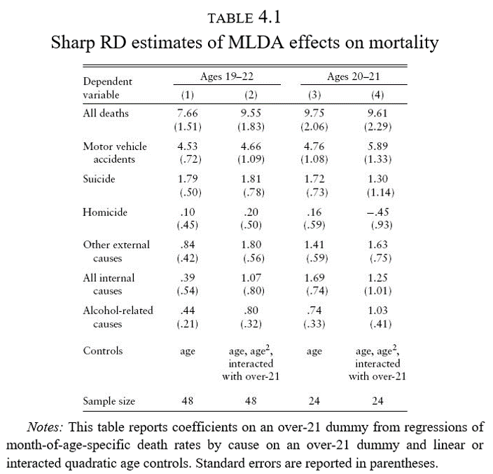
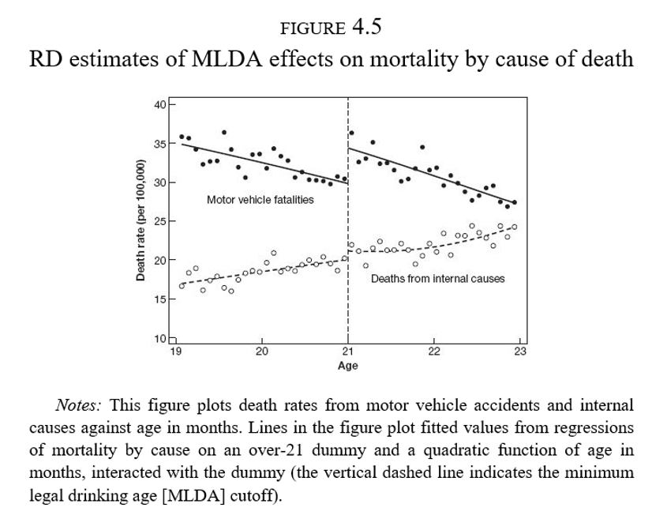
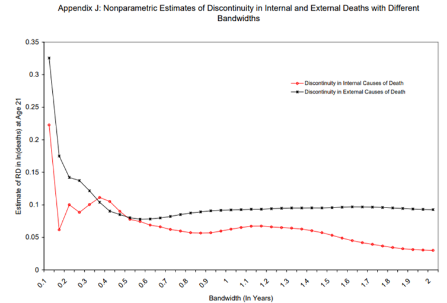
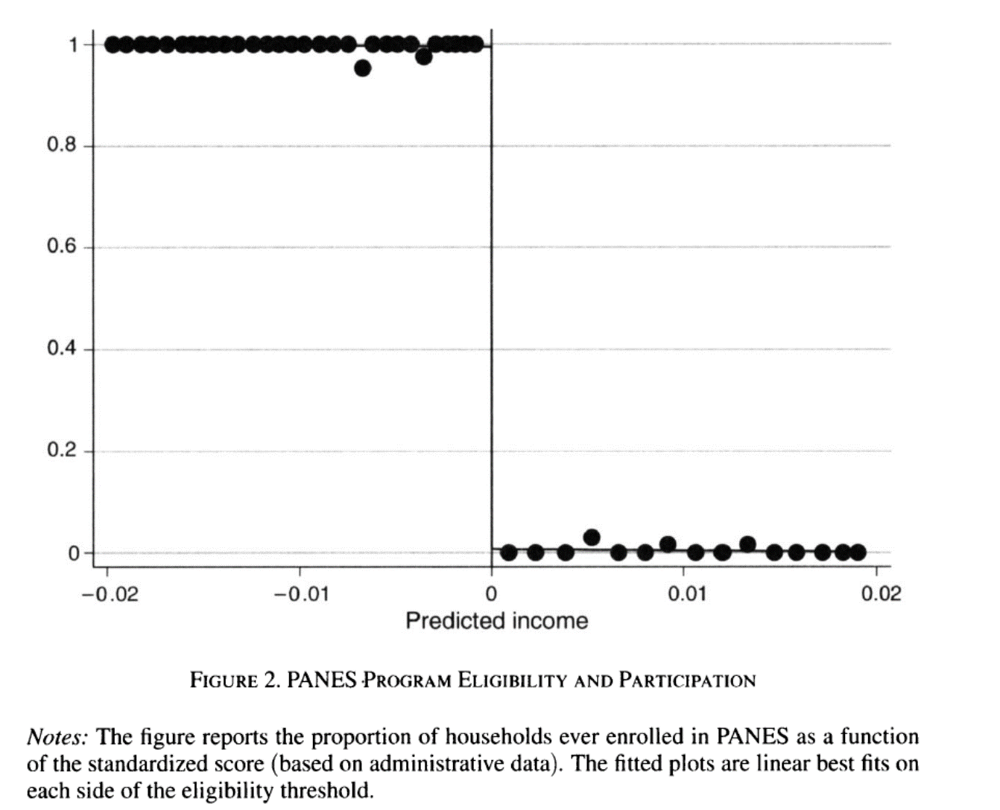
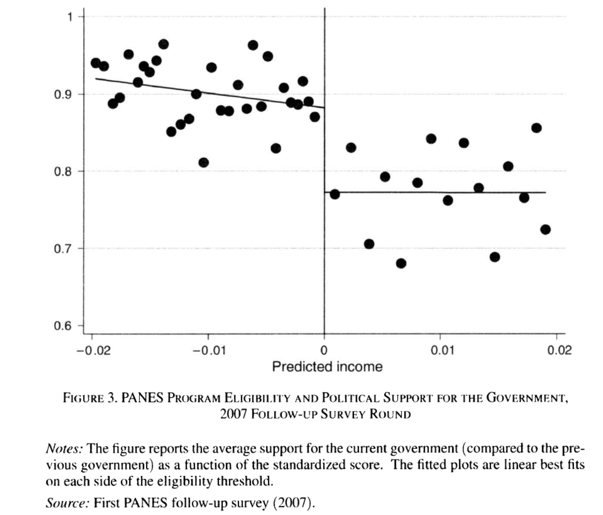
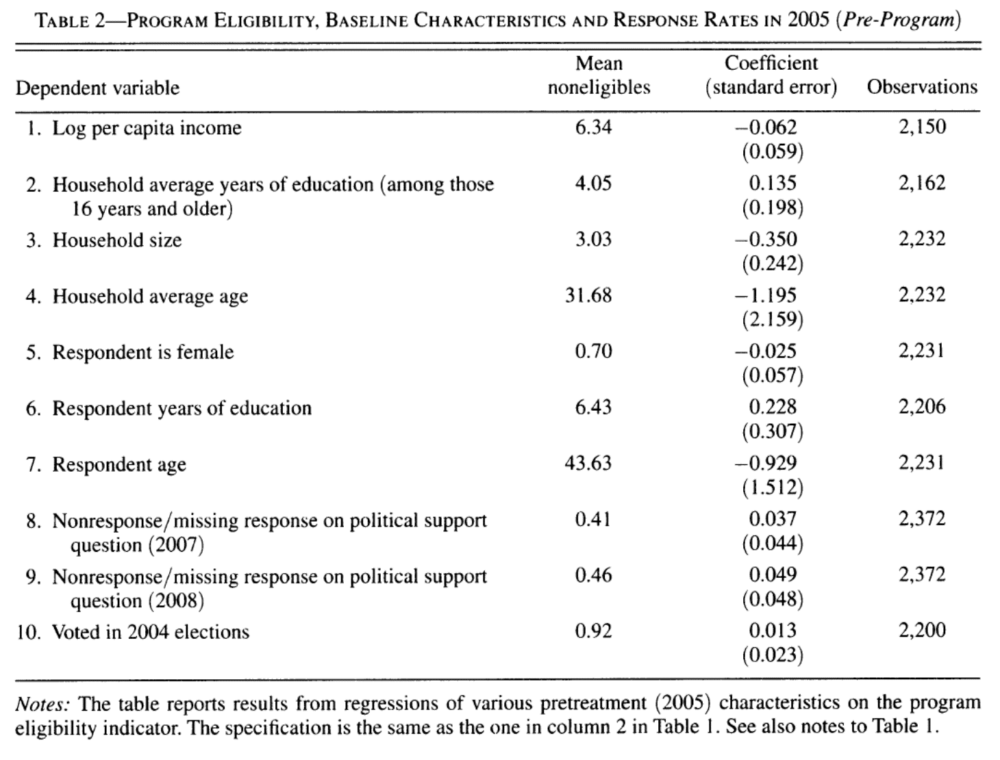

Clase 20. Diseños con discontinuidades
Inferencia Causal
Irvin Rojas
rojasirvin.com
Centro de Investigación y Docencia Económicas División de Economía
Motivación
El mundo está lleno de reglas
Podemos explotar estas reglas para aproximar experimentos
Ejemplos:
Índice de pobreza en PROGRESA
Edad legal para tomar
Regla de Maimonides
… muchas otras
Edad legal para tomar en EU
- En Estados Unidos la edad legal para tomar es de 21 años
- ¿Por qué tenemos una ley para prohibir el consumo de alcohol antes de los 21 (o 18) años?
- La ley genera una discontinuidad en el acceso a alcohol justo a los 21 años
- Podemos evaluar la efectividad de la política

¿Qué pasa en el cumpleaños 21?
¿Efecto fiesta?
Hay una tendencia a la baja a ambos lados de la discontinuidad
Sin embargo, hay un claro salto en el número de muertes a los 21 años

Discontinuidades nítidas
Discontinuidades nítidas
- \(D_a\) es el estado del tratamiento
\[ D_a = \begin{cases} 1 & \text{si } a \geq 21 \\ 0 & \text{si } a < 21 \end{cases} \]
\(a\) es conocida como running variable, score, variable de selección, variable de asignación, etc.
El tratamiento es una función determinística de \(a\)
- Si conocemos \(a\) entonces conocemos \(D_a\)
El tratamiento es discontinuo sobre \(a\)
- No importa qué tanto nos acercamos al corte, el estatus de tratamiento es el mismo hasta \(a\)
Discontinuidades níticas y regresión
Muchas cosas cambian con la edad
Riesgo de enfermedades, muerte por otras causas
Usamos regresión para aislar los efectos de la regla
\[ \bar{M}_a=\alpha+\rho D_a + \gamma a + \epsilon_a \]
\(\bar{M}_a\) es la tasa de mortalidad en el mes \(a\)
\(\rho\) captura el salto en la mortalidad a los 21 años
\(\hat{\rho}=7.66\) : número de muertes adicionales a los 21 años
Diferencia con otros diseños
A diferencia de los métodos de regresión o pareamiento donde controlamos por un vector \(X\) y esperamos que el tratamiento sea aleatorio controlando por \(X\)
Aquí no hay valores de \(a\) para los que observemos individuos en ambos estados del tratamiento
La interpretación de la RD es en la vecindad de la discontinuidad
No linealidad vs discontinuidad
Estimar el modelo de RD cuando la relación entre \(E[Y|X]\) es como en el tercer panel nos llevaría a inferir un salto donde no existe
Al usar RD debemos asegurarnos que estamos identificando una discontinuidad
- Modelar la no linealidad
- Concentrarnos solo en una ventana cercana a \(a_0\)

No linealidades
Podemos usar polinomios de \(a\)
Idealmente, las conclusiones no deberían cambiar de acuerdo al grado del polinomio usado
El consejo es intentar varias especificaciones y no solo la que se ajuste más a nuestras expectativas de los resultados
La Figura 4.2 parece tener una leve curvatura a la derecha de \(a\)
Podemos ajustar directamente un polinomio de la edad:
\[ \bar{M}_a=\alpha+\rho D_a + \gamma_1 a + \gamma_2 a^2 + \epsilon_a \]
- O podemos especificar un coeficiente diferente para \(a\) antes y después de \(a_0\):
\[ \bar{M}_a=\alpha+\rho D_a + \gamma(a-a_0) + \delta[(a-a_0)D_a] + \epsilon_a \]
No linealidades
- O podemos especificar un coeficiente diferente para \(a\) antes y después de \(a_0\):
\[ \bar{M}_a=\alpha+\rho D_a + \gamma(a-a_0) + \delta[(a-a_0)D_a] + \epsilon_a \]
- Notemos que en este caso el efecto del tratamiento es:
\[ \rho+\delta(a-a_0) \]
Es decir, un efecto que depende de la distancia con \(a_0\)
Sin embargo, ¿qué tan válido es evaluar el efecto en, digamos, \(a=30\)? ¿O en \(a=10\)?
No linealidades
- Podemos emplear una combinación de no linealidades y cambios en pendiente:
\[ \begin{aligned} \bar{M}_a&=\alpha+\rho D_a + \gamma_1(a-a_0) +\gamma_2(a-a_0)^2+\delta_1[(a-a_0)D_a]+ \delta_2[(a-a_0)^2D_a] + \epsilon_a \end{aligned} \]
En esta especificación los términos lineal y cuadrático cambian en \(a_0\)
Y el efecto del tratamiento en este caso es:
- Notemos que en este caso el efecto del tratamiento es:
\[ \rho+\delta_1(a-a_0)+\delta_2(a-a_0)^2 \]
- En los dos casos anteriores, regularmente se interpreta solo a \(\rho\) como el efecto del tratamiento
No linealidades
\(\hat{\rho}=9.55\)
Modelo más elaborado con mejor ajuste
Es evidente gráficamente que hay un salto a los 21 años y una caída suave después
¿Qué tan robustos son los resultados?

Efectos estimados
Fuente: Angrist & Pischke (2014)
Efectos estimados
Fuente: Angrist & Pischke (2014)
Efectos estimados con distintas ventanas
- Podemos concentrarnos en ventanas cercanas a \(a_0\):
\[ \bar{M}_a=\alpha+\rho D_a + \gamma a + \epsilon_a, \quad \quad a_0-b\leq a\leq a_o+b \]
Donde \(b\) es el ancho de banda
Hasta ahora usábamos \(b=2\)
Las columnas 3 y 4 muestran los resultados al centrar la atención a un año alrededor de \(a_0\), es decir, \(b=1\)
Un ancho de banda menor implica menos datos y por tanto mayor varianza muestral
Estimar el modelo con distintos anchos de banda y observar el comportamiento de los estimadores
Efectos estimados con distintas ventanas
Fuente: Carpenter & Dobkin (2009)
Ejemplo: Transferencias gubernamentales y apoyo político
Transferencias gubernamentales y apoyo político
Manacorda, M., E. Miguel y A. Vigorito (2011), Government Transfers and Political Support
¿Los programas gubernamentales generan lealtades?
Programa Nacional de Emergencia Social (PANES) basado en un índice de pobreza
Existe una discontinuidad en el acceso al programa
Contexto
¿Qué pasó en Uruguay?
Crisis económica a inicios de los 2000
En abril de 2005 el Frente Amplio toma el poder
Expansión del gasto público contra la pobreza (0.41% del PIB)
PANES
Ingreso ciudadano: US$70
Otros componentes: alimenticio, empleo, salud, etc.
Alcanzó al 10% de los hogares y 14% de la población
Regla de asignación
¿Cómo se decidió quién recibiría el PANES?
Focalizado a los más pobres
Modelo probit de ingreso ajustado
El ingreso observado puede ser un indicador muy ruidoso
Se asignó el programa solo a aquellos por debajo de un umbral de ingreso ajustado
Datos
Se recolectó información de los hogares alrededor de la discontinuidad (tratados y no tratados)
Se realizaron dos rondas de seguimiento en 2006-07 y en 2008
Variable de interés: apoyo político al gobierno en turno

¿Cómo medir el apoyo político?
Construcción de un índice del 0 al 1
Los hogares que reciben PANES tenían un apoyo político cercano a 0.90
Los no elegibles mostraban un apoyo de 0.77
Esto implica un incremento de 13 puntos porcentuales
Evidencia gráfica
Fuente: Manacorda et al. (2011)
Resultados de regresión
\(E\) es el umbral de elegibilidad de PANES
\(N_i=S_i-E\) es el score normalizado
\[ y_i=\beta_0+\beta_1 \mathcal{I}(N_i<1) + f_1(N_i) + \mathcal{I}f_2(N_i)+u_i \]
- \(\beta_1\) captura el impacto del programa
Efectos estimados

Fuente: Manacorda et al. (2011)
Evidencia gráfica en 2008

Fuente: Manacorda et al. (2011)
Robustez
Fuente: Manacorda et al. (2011)
Interpretación
Se descarta una interpretación de votantes miopes
Se descartan efectos de largo plazo pues no hay efectos significativos en activos
Modelo teórico
- Agentes racionales que aprenden de las preferencias de los políticos
Discontinuidades nítidas: resumen
Discontinuidades nítidas: resumen
- RD nítida se usa cuando el tratamiento es una función determinística de una variable \(x\)
\[ D_i = \begin{cases} 1 & \mbox{if } x_i \geq x_0 \\ 0 & \mbox{if } x_i < x_0 \end{cases} \]
\(x_0\) es el umbral o corte
\(D_i\) es una función determinística de \(x_i\) pues una vez que conocemos \(x_i\) entonces conocemos \(D_i\)
\(D_i\) es una función discontinua en \(x_i\) pues no importa que tanto nos acerquemos por la izquierda o por la derecha a \(x_0\), el estado del tratamiento no cambia
Discontinuidades nítidas: resumen
A diferencia de los modelos de regresión o de pareamiento, no hay valor de \(x_i\) en el que observemos a individuos tratados y no tratados
La interpretación del efecto estimado por RD es un efecto local en la vecindad de \(x_0\), donde podemos tener confianza que los individuos tratados y no tratados son similares en todas las dimensiones excepto en su posición respecto a \(x_0\)
Una especificación flexible permite no confundir una discontinuidad con una no linealidad
En la práctica, el polinomio de \(x_i\) puede ser tan complejo como se desee pero se espera que los resultados no sean muy sensibles a especificaciones de este
El método no paramétrico consiste en la estimación de \(\rho\) en vecindades cada vez más pequeñas alrededor de \(x_0\)
Próxima clase
Lecturas adicionales sugeridas:
Lee, D. S., & Lemieux, T. (2010). Regression discontinuity designs in economics. Journal of economic literature, 48(2), 281-355.
Imbens, G. W., & Lemieux, T. (2008). Regression discontinuity designs: A guide to practice. Journal of econometrics, 142(2), 615-635.
Otro ejemplo
- Del Valle, A., de Janvry, A., & Sadoulet, E. (2020). Rules for recovery: Impact of indexed disaster funds on shock coping in Mexico. American Economic Journal: Applied Economics, 12(4), 164-95.
Introduciremos los diseños con discontinudades difusas
- Ver MT, sección 6.2.7
Presentación creada usando el paquete xaringan en R.
El chakra viene de remark.js, knitr, y R Markdown.
Material de clase en versión preliminar.
No reproducir, no distribuir, no citar.